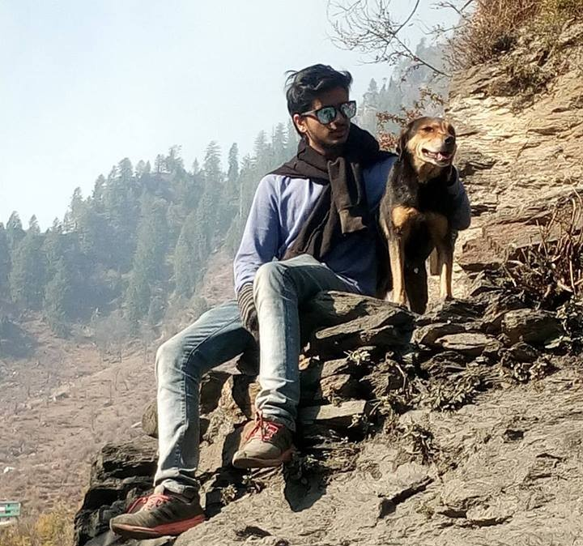
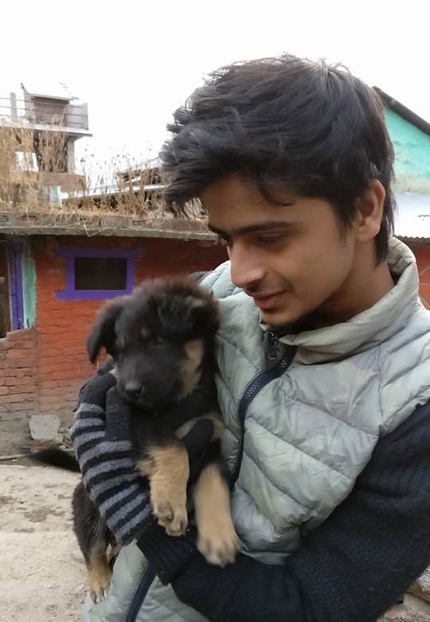

November 7, 2019
Hi, I am Aditya Lakhe, a Y15 graduate who sat through the placement season. This blog is for some useful tips and tricks to ease the tension during placements.
Hey guys and gals!!! Welcome to the most hectic and stressful
phase of your campus life-the much dreaded ‘placements’. In
case you feel you are somewhat lacking in your preparations,
stay calm and have faith in yourself. Many students are
unclear about the kind of job they want. Talk to different
alumni, seniors, and friends, who have had different job
profiles to get insights into each domain. You should have a
proper understanding of the skills required in each field and
decide what suits you best accordingly. Keep honing your
aptitude and coding skills through regular practice from
various resources like pariksha.com, SPO preparation portal,
etc. My friends and I used to practice guesstimates, case
studies, and puzzles in groups to create a mock interview kind
of an environment. It is certainly going to increase your
self-confidence and be beneficial in the actual interview.

The most important part of your preparation is your resume.
Your resume should be honest and to the point because a lot of
time would be dedicated to verifying the points mentioned in
your resume, especially in the HR round. You should be able to
counter every possible argument that can be made about the
points in your resume. While drafting your resume, get it
verified by as many alumni, seniors, and friends as you can,
from different backgrounds and experiences to get different
perspectives. Always remember however much your resume sounds
perfect to you, it is another’s perspective that is gonna
decide your future. Once satisfied with the final draft of
your resume, ask your peers and seniors to take a mock
interview of yours based on that resume. Making a resume
should be an iterative process, that ought to make perfect.
Consult as many people possible and select the best fit for
you:)

CGPA is undoubtedly one of the most crucial aspects of your
resume as it is, in some sense, a quantitative measure of your
academic life in college. But let me be clear, it is not the
only selection criteria. Once you get an interview, if you are
relevant for the job profile, no matter what your CGPA is, you
will get selected if you have prepared well for the interview.
If you can prove to the interviewer that you have the required
skills and personality, the CGPA won’t matter much. So if you
have a low CGPA just as I had, don't worry because there's
little you can do about it now, instead try to focus on your
other skills and prepare well for the interview. Some of the
companies do have a strict CGPA criterion even after selection
and might reject you even if you have the relevant skills,
which happened with my friend, but this is the case with only
a few companies. Most of the companies are just searching for
a person most suitable for the job. That friend of mine, who
got rejected due to his CGPA was placed the very next day in
ICICI Lombard. CGPA might be a significant criterion during
placement season, but once you get into the interview room, it
is only your skills that matter the most. Don’t get stressed
about your CGPA or any such stuff now. Prepare well for the
interview because now that’s what gonna matter the most and
have a blast on the final interview day!!!
One thing people having low CGPA usually bother about the most
is getting the reason behind their low CGPA asked in the
interview room. Don’t get nervous. Prepare well for this
question from before and be confident while answering. In most
cases it is the student's fault for the low CGPA, so be honest
and let them know that it was your fault in the first place.
Definitely tell them how passionate you are about the job and
that this failure isn't going to stop you from achieving what
you want to accomplish in your career or life in general.
Also, it may be the case that you would have excelled in
various other things on the campus like sports, leadership
positions, cultural activities, etc. Let them know about these
things, but never make it sound like an excuse for your low
CGPA. Tell them that you have learned a lot from this one
failure and it has made you realize the importance of
consistency and dedication in life, thus making you more
determined to work hard in your career.
Placement seasons are going to be a test for your patience
well. Getting rejected in many interviews could also make you
question yourself "Will I get placed or not?" but trust me if
you stay patient and have faith in your skills, you will
definitely get placed. During my placement days after getting
rejected in a lot of interviews, I started losing faith. The
question of getting placed started coming up in my mind and I
sort of started giving up, but my friends kept supporting me.
In one of my interviews, I was unable to answer the technical
questions, which I knew was due to undue stress. I was so low
in confidence that the thought of having to tell the
interviewer every specific detail of the questions that he/she
was asking made me not answer them. When I shared this
experience with one of my friends, she helped me regain my
faith and told me that I knew all these things. Her talking to
me made me realize that I just had to inform them about my
skills. It is not about answering the questions in a very
detailed manner. Instead, it's about letting them know as much
as you know about that specific job profile. What I have
learned after so many interviews is that it is necessary to
think out loud during the interviews and thus convey to the
interviewer as much as you can. Think of it as a conversation
about the relevant skills and not an interview. Also, quite
importantly, stay with your friends during the placement
season as they will prove to be a massive support system for
you during this stressful period. Even after you are placed,
help your friends as much as you can. Be patient, it’s just a
matter of time.
Good luck to everyone for their
future endeavors.Cheers!!